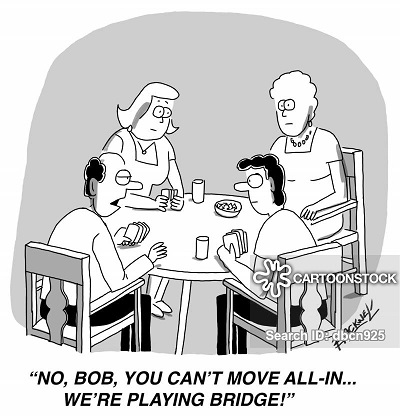

Happy Birthday to the United States Marine Corps 1775-2020 |
|
He is in charge for Tuesday night.
Important documents for each Tuesday night.
| Last week's tables | Starting a BBO table | Statesboro Roster |
Contact Jean Johnson to play.
If you like bridge, you'll love duplicate. Come join us.
Play free on-line
4 games of solitaire. No registration required. All bids explained (SAYC). |
 |  |
 |
 Recent results November 24 BBO 6 pairs, 3 Tables (5 rounds of 4 hands)
November 17 BBO 8 pairs, 4 Tables (7 rounds of 3 hands)
November 10 BBO 7 pairs, 3 Tables (6 rounds of 3 hands)
NO SCORES available for November 3, 2020. October 27 BBO 7 pairs, 3 Tables (6 rounds of 3 hands)
|
Last week's winners |
| Jean & Chuck | 44.3 |
| Mary and Bill | 43.2 |
| Eleanor & Emma | 41.4 | Jane and Verna | 39.3 |

Duplicate Basics
Some commonly used conventions.
Please make suggestions for improvement
Statesboro Roster
Start a table in BBO
Round ending times.

updated on 12/2/2020